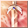
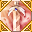
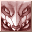
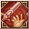

Loading...
Items
Armas
Espada
Maza
Hacha
Espada dos manos
Maza dos manos
Hacha dos manos
Arco
Arma de Fuego
Reliquia
Bastón
Escudo
Arma mec. 1 mano
Arma mec. 2 manos
Cañon Pesado
Flechas
Balas de cañon
Llave de Cristal
Katana
Armadura
Cabeza
Cuerpo
Piernas
Manos
Piernas
Dorso
Accesorio
Mochila
Equipo Especial
Equipo 1 mano
Equipo 2 manos
Equipo Cabeza
Equipo Espalda
Cuerpo
Articulos de Talento
Talentos
Planos
Fragmentos
Skills
Piedras Mega
Sprite
Sprite
Monstruo Embotellado
Mochila
Formula Isla Sprite
Cria Isla Sprite
Receta Isla Sprite
Edificio Isla Sprite
Legados
Muebles Sprite
Emblema Sprite
Skill Book(Novice)
Skill Book(Intermediate)
Skill Book(Advanced)
Materiales
Mineria
Forraje
Caza
Materiales de equipo
Piedras de Equipo
Gema Prismatica
Piedra Runa
Piedra de Resonancia
Nucleos
Monturas
Tronos
Comb Talentos
Berserker
Paladin
Ranger
Asesino
Clerigo
Sabio
Mago
Nigromante
Artificiero
Artillero
Duelista
Relojero
Quest
Titulos
Skills
Berserker
Paladin
Ranger
Asesino
Clerigo
Sabio
Mago
Nigromante
Artificiero
Artillero
Duelista
Relojero
Sprites
Spanish
English
Español
Portuguese
French
Sugerencias
Contáctenos
Creditos
Haz Alquimia
F.A.Q
Hora
00
:
00
:
00
Horario Emisarios
<Avatar del Emisario> Heraldo de la Lujuria
Bosque Antiguo (X:290, Y:370) Lunes 20:35
<Emisario del Juicio Final Lunático> Locura de Lujuria
Valle de Caballeros (X:510.53, Y:619.852) Lunes 20:35
<Emisario Pesadilla> Voraz Ladona
Club de Lucha del Rey Sprite (X:134.088, Y:347.754) Lunes 15:30
<Emisario Antiguo> Justicia
Valle del Espíritu (X:439.138, Y:559.115) Lunes 20:30
<Emisario de Ilusión> Yen Alfa
Aldea Aura Ficticia (X:639.151, Y:232.943) Lunes 15:30
<Emisario de Ilusión> Zhong Iota
Sendero Llamafría (X:534.548, Y:578.733) Lunes 20:30
Skills Berserker
Skills
Skills Pasivos
Nombre
Nivel
Efecto
Oleada de Ira 1
Skills
×
Oleada de Ira 1
Oleada de Ira 2
Oleada de Ira 3
Oleada de Ira 4
Gran Ola Sangrienta 1
Gran Ola Sangrienta 2
Oleada de Ira Máxima 1
Entusiasmo Extremo 2
6
Info
Golpe Rompecielos 1
Skills
×
Golpe Rompecielos 1
Golpe Rompecielos 2
Golpe Rompecielos 3
Golpe Rompecielos 4
Golpe Rompecielos 5
Golpe Rompecielos 6
Golpe Súper Rompe-Cielo 1
Golpe Súper Rompe-Cielo 2
Asalto Rompecielos 1
Asalto Rompecielos 2
6
Info
Corte de Torbellino 1
Skills
×
Corte de Torbellino 1
Corte de Torbellino 2
Corte de Torbellino 3
Corte de Torbellino 4
Corte de Torbellino 5
Corte de Torbellino 6
Tormenta Tajante 1
Tormenta Tajante 2
Corte de Tormenta 1
Corte de Tormenta 2
6
Info
Golpe Debilitante 1
Skills
×
Golpe Debilitante 1
Golpe Debilitante 2
Golpe Debilitante 3
Golpe Debilitante 4
Golpe Debilitante 5
Golpe Reductor 1
Golpe Reductor 2
Asalto de Conmoción 1
Asalto de Conmoción 2
8
Info
Onda Terrestre 1
Skills
×
Onda Terrestre 1
Onda Terrestre 2
Onda Terrestre 3
Onda Terrestre 4
Ola Agrieta-Tierra 1
Ola Agrieta-Tierra 2
Parte Tierra 1
Parte Tierra 2
16
Info
Escudo Golpeador 1
Skills
×
Escudo Golpeador 1
Escudo Golpeador 2
Escudo Golpeador 3
Golpe Escudo Masivo 1
Golpe Escudo Masivo 2
Destruye-Escudos Poderosos 1
Destruye-Escudos Poderosos 2
16
Info
Torbellino Furioso 1
Skills
×
Torbellino Furioso 1
Torbellino Furioso 2
Torbellino Furioso 3
Torbellino Furioso 4
31
Info
Sanguinario 1
Skills
×
Sanguinario 1
Sanguinario 2
Sanguinario 3
Sanguinario 4
Sanguinario 5
Sanguinario 6
Demencia Sanguinaria 1
Demencia Sanguinaria 2
Demencia Sanguinaria 3
Sangriento Frenético 1
Sangriento Frenético 2
31
Info
Ola Poderosa 1
Skills
×
Ola Poderosa 1
Ola Poderosa 2
Ola Poderosa 3
Ola Poderosa 4
Ola Poderosa 5
Ola Poderosa 6
Ola Poderosa 7
Ola Poderosa 8
Ola Poderosa 9
Ola Poderosa Mejorada 1
Ola Poderosa Mejorada 2
Ola Poderosa Mejorada 3
Mega Ola Poderosa 4
Ola Poderosa Mejorada 4
Ola Poderosa Suprema 1
Ola Poderosa Suprema 2
Ola Poderosa Suprema 3
Ola Poderosa Suprema 4
31
Info
Grito de Guerra 1
Skills
×
Grito de Guerra 1
Grito de Guerra 2
Grito de Guerra 3
Grito de Guerra 4
Grito de Guerra 5
Rugido de Guerra 1
Rugido de Guerra 2
Rugido de Gran Batalla 1
Rugido de Gran Batalla 2
31
Info
Tajo Navaja Salvaje 1
Skills
×
Tajo Navaja Salvaje 1
Tajo Navaja Salvaje 2
Tajo Navaja Salvaje 3
Tajo Navaja Salvaje 4
Tajo Navaja Salvaje 5
Tajo Navaja Salvaje 6
Tajo Navaja Salvaje 7
Tajo Navaja Salvaje 8
Tajo Navaja Salvaje 9
Tornado Devastador 1
Tornado Devastador 2
Tornado Devastador 3
Tornado Devastador 4
Tornado Devastador 5
Pedazo de Súper Tornado 1
Pedazo de Súper Tornado 2
Pedazo de Súper Tornado 3
Pedazo de Súper Tornado 4
31
Info
Embestida Torera 1
Skills
×
Embestida Torera 1
Embestida Torera 2
Embestida Torera 3
Embestida Torera 4
Embestida Torera 5
Embestida Torera 6
Embestida Torera 7
Carga Reforzada 2
32
Info
Terremoto Catastrófico 1
Skills
×
Terremoto Catastrófico 1
Terremoto Catastrófico 2
Terremoto Catastrófico 3
Terremoto Catastrófico 4
Terremoto Catastrófico 5
Terremoto Catastrófico 6
Terremoto Catastrófico 7
Terremoto Catastrófico 8
Terremoto Catastrófico 9
Impacto al Centro de la Tierra 1
Impacto al Centro de la Tierra 2
Impacto al Centro de la Tierra 3
Impacto al Centro de la Tierra 4
Impacto al Centro de la Tierra 5
Golpe al Núcleo 1
Golpe al Núcleo 2
Golpe al Núcleo 3
Golpe al Núcleo 4
32
Info

Rugido Terrible de Guerra 1
Skills
×
Rugido Terrible de Guerra 1
Rugido Terrible de Guerra 2
Rugido Terrible de Guerra 3
Rugido Terrible de Guerra 4
Rugido Terrible de Guerra 5

Gemido del Alma 1
Gemido del Alma 2
Gemido del Alma 3
Gemido del Alma Salvaje 1
Gemido del Alma Salvaje 2
Gemido del Alma Salvaje 3
32
Info
Ola Terreno Punzante 1
Skills
×
Ola Terreno Punzante 1
Ola Terreno Punzante 2
Ola Terreno Punzante 3
Ola Terreno Punzante 4
Ola Terreno Punzante 5
Ola Terreno Punzante 6
Ola Terreno Punzante 7
Ola Terreno Punzante 8
Ola Terreno Punzante 1
Ola Terreno Punzante 2
Ola Terreno Punzante 3
Ola Terreno Punzante 4
Ola Terreno Punzante 4
Ola de Choque Demoniaco 1
Ola de Choque Demoniaco 2
Ola de Choque Demoniaco 3
Ola de Choque Demoniaco 4
34
Info
Golpe Aplastante 1
Skills
×
Golpe Aplastante 1
Golpe Aplastante 2
Golpe Aplastante 3
Golpe Aplastante 4
Golpe Aplastante 5
Golpe Aplastante 6
Golpe Aplastante 7
Golpe Aplastante 8
Golpe Aniquilador 1
Golpe Aniquilador 2
Golpe Aniquilador 3
Golpe Aniquilador 4
Golpe Aniquilador 5
Golpe Pulverizador 1
Golpe Pulverizador 2
Golpe Pulverizador 3
Golpe Pulverizador 4
36
Info
Cuchillada Abismal 1
Skills
×
Cuchillada Abismal 1
Cuchillada Abismal 2
Cuchillada Abismal 3
Cuchillada Abismal 4
Cuchillada Abismal 5
Tajo Espacial 1
Tajo Espacial 2
Tajo Espacial 3
Súper Tajo Espacial 1
Súper Tajo Espacial 2
Súper Tajo Espacial 3
40
Info
Danza de Caos 1
Skills
×
Danza de Caos 1
Danza de Caos 2
Danza de Caos 3
Danza de Caos 4
Danza de Caos 5
Danza Lunática 1
Danza Lunática 2
Danza Frenética 1
Danza Frenética 2
40
Info
Furia de Batalla 1
Skills
×
Furia de Batalla 1
Furia de Batalla 2
Furia de Batalla 3
Animo Asesino 1
Animo Asesino 2
Ánimo Asesino 3
Voluntad Cruel 1
Voluntad Cruel 2
Voluntad Cruel 3
40
Info
Recuperación 1
Skills
×
Recuperación 1
Recuperación 2
Recuperación 3
Recuperación 4
Recuperación 5
Recuperación 6
Recuperación 7
Recuperación 8
Recuperación 9
Recuperación Intensiva 1
Recuperación Intensiva 2
61
Info
Golpe Vigoroso 1
Skills
×
Golpe Vigoroso 1
Golpe Vigoroso 2
Golpe Vigoroso 3
Golpe Vigoroso 4
Golpe Vigoroso 5
61
Info
Intento Asesino 1
Skills
×
Intento Asesino 1
Intento Asesino 2
Intento Asesino 3
Intento Asesino 4
Intento Asesino 5
Intento Asesino 6
Intento Asesino 7
66
Info
Tajo Saltante 1
Skills
×
Tajo Saltante 1
Tajo Saltante 2
Tajo Saltante 3
Tajo Saltante 4
Tajo Saltante 5
Tajo Saltante 6
Tajo Saltante 7
66
Info
Posible Libertad
Skills
×
Posible Libertad
66
Info
Escapó Sin Dejar Rastro
Skills
×
Escapó Sin Dejar Rastro
66
Info
Golpe Sobrenatural
Skills
×
Golpe Sobrenatural
66
Info
Fanatismo 1
Skills
×
Fanatismo 1
Fanatismo 2
Fanatismo 3
Fanatismo 4
Fanatismo 5
Fanatismo 6
67
Info
Reto 1
Skills
×
Reto 1
Reto 2
Reto 3
Reto 4
Reto 5
68
Info
Golpe Sangriento 1
Skills
×
Golpe Sangriento 1
Golpe Sangriento 2
Golpe Sangriento 3
Golpe Sangriento 4
Golpe Sangriento 5
Golpe Sangriento 6
Golpe Sangriento 7
Golpe Sangriento 8
69
Info
Estrépito Impetuoso
Skills
×
Estrépito Impetuoso
84
Info
Arraso Sangriento Máximo 1
Skills
×
Arraso Sangriento Máximo 1
Arraso Sangriento Máximo 2
Arraso Sangriento Máximo 3
Arraso Sangriento Máximo 4
86
Info
Crueldad 1
Skills
×
Crueldad 1
Crueldad 2
86
Info
Indomable 1
Skills
×
Indomable 1
Indomable 2
Indomable 3
Indomable 4
Indomable 5
87
Info
Espíritu Luchador Salvaje
Skills
×
Espíritu Luchador Salvaje
91
Info
Deseo de Lucha
Skills
×
Deseo de Lucha
91
Info
Juicio Sangriento
Skills
×
Juicio Sangriento
91
Info
Furia del Dios de Guerra
Skills
×
Furia del Dios de Guerra
91
Info
Cicatriz de Guerra
Skills
×
Cicatriz de Guerra
91
Info
Nombre
Nivel
Efecto
Alma Fracturada a
Skills
×
Alma Fracturada a
Alma Fracturada ß
Alma Fracturada ß
Alma Fracturada d
6
Info
Golpe Mortal 1
Skills
×
Golpe Mortal 1
Golpe Mortal 2
Golpe Mortal 3
Golpe Mortal 3
Golpe Mortal 4
Golpe Mortal 4
Golpe Mortal 5
Golpe Mortal 5
Golpe Mortal 6
Golpe Mortal 6
6
Info
Mega Ola Sangrienta 1
Skills
×
Mega Ola Sangrienta 1
Mega Ola Sangrienta 2
Mega Ola Sangrienta 3
Mega Ola Sangrienta 4
Mega Ola Sangrienta 5
6
Info
Experto en Defensa
Skills
×
Experto en Defensa
6
Info
Mega Golpe Menguante 1
Skills
×
Mega Golpe Menguante 1
Mega Golpe Menguante 2
Mega Golpe Menguante 3
Mega Golpe Menguante 4
Mega Golpe Menguante 5
8
Info
Mega Destruye-Escudos 1
Skills
×
Mega Destruye-Escudos 1
Mega Destruye-Escudos 2
Mega Destruye-Escudos 3
Mega Destruye-Escudos 4
Mega Destruye-Escudos 5
16
Info
Vitalidad en Batalla
Skills
×
Vitalidad en Batalla
16
Info
Mega Ola Poderosa 1
Skills
×
Mega Ola Poderosa 1
Mega Ola Poderosa 2
Mega Ola Poderosa 3
Mega Ola Poderosa 4
Mega Ola Poderosa 5
31
Info
Mega Tajo Navaja Salvaje 1
Skills
×
Mega Tajo Navaja Salvaje 1
Mega Tajo Navaja Salvaje 2
Mega Tajo Navaja Salvaje 3
Mega Tajo Navaja Salvaje 4
Mega Tajo Navaja Salvaje 5
31
Info

Mega Ama-Sangre 1
Skills
×
Mega Ama-Sangre 1
Mega Ama-Sangre 2
Mega Ama-Sangre 3
Mega Ama-Sangre 4
Mega Ama-Sangre 5
31
Info
Mega Terremoto Catastrófico 1
Skills
×
Mega Terremoto Catastrófico 1
Mega Terremoto Catastrófico 2
Mega Terremoto Catastrófico 3
Mega Terremoto Catastrófico 4
Mega Terremoto Catastrófico 5
32
Info
Mega Golpe Aplastante 1
Skills
×
Mega Golpe Aplastante 1
Mega Golpe Aplastante 2
Mega Golpe Aplastante 3
Mega Golpe Aplastante 4
Mega Golpe Aplastante 5
36
Info
Mega Danza Caótica 1
Skills
×
Mega Danza Caótica 1
Mega Danza Caótica 2
Mega Danza Caótica 3
Mega Danza Caótica 4
Mega Danza Caótica 5
40
Info
Mega Navaja Aspirante 1
Skills
×
Mega Navaja Aspirante 1
Mega Navaja Aspirante 2
Mega Navaja Aspirante 3
Mega Navaja Aspirante 4
Mega Navaja Aspirante 5
40
Info
Mega Demencia Sanguinaria 1
Skills
×
Mega Demencia Sanguinaria 1
Mega Demencia Sanguinaria 2
Mega Demencia Sanguinaria 2
Mega Demencia Sanguinaria 4
Mega Demencia Sanguinaria 5
66
Info
Persistencia 1
Skills
×
Persistencia 1
Persistencia 2
Persistencia 3
Persistencia 4
Persistencia 5
Persistencia 6
66
Info
Mega Ola Poderosa Mejorada 1
Skills
×
Mega Ola Poderosa Mejorada 1
Mega Ola Poderosa Mejorada 2
Mega Ola Poderosa Mejorada 3
Mega Ola Poderosa Mejorada 4
Mega Ola Poderosa Mejorada 5
66
Info
Posesión del Dios del Fuego 1
Skills
×
Posesión del Dios del Fuego 1
Posesión del Dios del Fuego 2
Posesión del Dios del Fuego 3
66
Info
Fuerza Exorcista 1
Skills
×
Fuerza Exorcista 1
Fuerza Exorcista 2
Fuerza Exorcista 3
66
Info
Mega Tornado Devastador 1
Skills
×
Mega Tornado Devastador 1
Mega Tornado Devastador 2
Mega Tornado Devastador 3
Mega Tornado Devastador 4
Mega Tornado Devastador 5
66
Info
Mega Impacto al Centro de la Tierra 1
Skills
×
Mega Impacto al Centro de la Tierra 1
Mega Impacto al Centro de la Tierra 2
Mega Impacto al Centro de la Tierra 3
Mega Impacto al Centro de la Tierra 4
Mega Impacto al Centro de la Tierra 5
68
Info
Mega Golpe Aniquilador 1
Skills
×
Mega Golpe Aniquilador 1
Mega Golpe Aniquilador 2
Mega Golpe Aniquilador 3
Mega Golpe Aniquilador 4
Mega Golpe Aniquilador 5
68
Info
Mega Ola Sangrienta Mejorada 1
Skills
×
Mega Ola Sangrienta Mejorada 1
Mega Ola Sangrienta Mejorada 2
Mega Ola Sangrienta Mejorada 3
Mega Ola Sangrienta Mejorada 4
Mega Ola Sangrienta Mejorada 5
68
Info
Mega Golpe Reductor 1
Skills
×
Mega Golpe Reductor 1
Mega Golpe Reductor 2
Mega Golpe Reductor 3
Mega Golpe Reductor 4
Mega Golpe Reductor 5
68
Info
Mega Danza Lunática 1
Skills
×
Mega Danza Lunática 1
Mega Danza Lunática 2
Mega Danza Lunática 3
Mega Danza Lunática 4
Mega Danza Lunática 5
70
Info
Mega Tajo Espacial 1
Skills
×
Mega Tajo Espacial 1
Mega Tajo Espacial 2
Mega Tajo Espacial 3
Mega Tajo Espacial 4
Mega Tajo Espacial 5
70
Info
Mega Golpe Escudo Masivo 1
Skills
×
Mega Golpe Escudo Masivo 1
Mega Golpe Escudo Masivo 2
Mega Golpe Escudo Masivo 3
Mega Golpe Escudo Masivo 4
Mega Golpe Escudo Masivo 5
70
Info
Atraviesa Armaduras 1
Skills
×
Atraviesa Armaduras 1
Atraviesa Armaduras 2
86
Info
Alma Invencible 1
Skills
×
Alma Invencible 1
Alma Invencible 2
Alma Invencible 3
Alma Invencible 4
Alma Invencible 5
86
Info

Contraataque Veloz 1
Skills
×
Contraataque Veloz 1
91
Info
Creditos
×
Desarrolladores:
Kougami
EX GS Angelique
Colaboradores:
EX GS Roshi
EX GS Marchel
Contáctenos
×
Correos de contacto
admin@grandfantasia-db.com